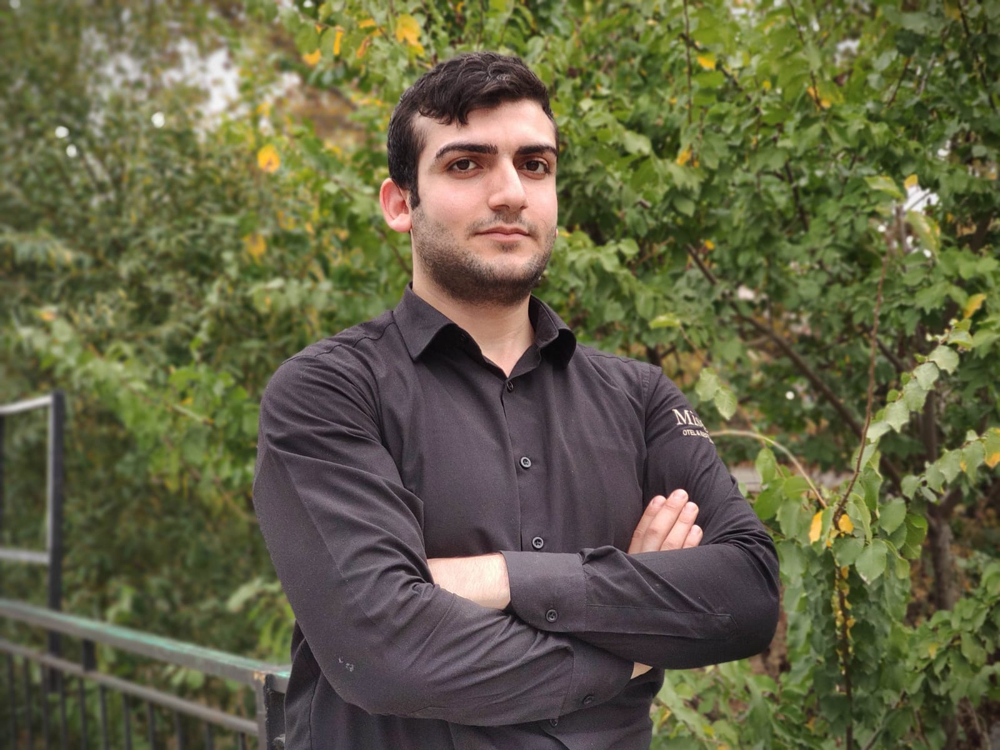

** Mustafa'nın Yazılım Dünyasına Hoş Geldiniz **
-Hakkımda-
Ben Mustafa Öztosun. 27 yaşındayım ve aslen Muş'luyum. Aydın'da doğup
büyüdüm. Yaklaşık 14 yıl Aydın'da yaşadıktan sonra Bursa'ya taşındık. Şuanda
da 10 yılı aşkın süredir burada yaşıyorum. Yazılım geliştirmeye 2021 yılında
tam olarak başlamış sayılırım. Öncesinde birçok iş yaptım. Şimdi ve kalıcı
hedefim olarak bu alanı seçtim. Kenidimi Python'cu, Java'cı ,Csharp'çı
olarak hiç tanımlamadım. Ben Yazılım Geliştiricisiyim. Her konuda mükemmel
olamam, ama kendimi birçok konuda geliştirebilirim.
Bu sayfa, yazarın genel özellikleri ve çalışma yaptığı konular
hakkında bilgi içermektedir.
Yazılım Geliştirme - Mustafa Öztosun

Resme tıklayarak resmi Youtube kanalıma ulaşanbilirsiniz.